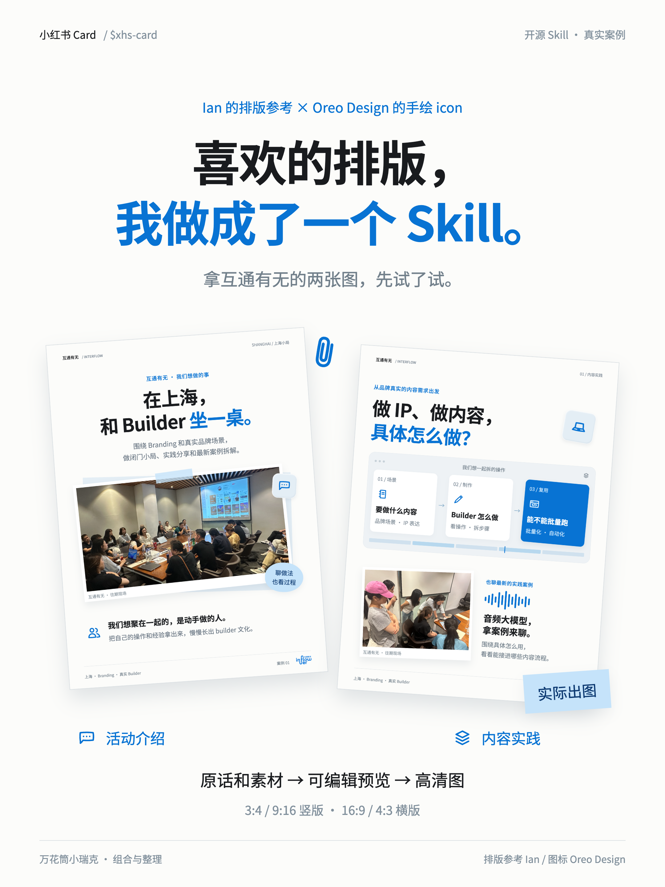

这次定下来的三张真实案例。
互通有无的上海小局与内容实践。蓝白黑、思源黑体、手绘 icon、轻 UI 层次，加上真实现场照片。
这组作为当前视觉参考；换内容时重新排版，照片、品牌与个人经历不直接沿用。


下载高清 PNG ↓

下载高清 PNG ↓

下载高清 PNG ↓
排版参考 Ian · 手绘图标 Oreo Design / Nicole Tang · 字体 Adobe / Google 思源黑体。
真实照片与品牌内容经作者确认用于本项目展示，不纳入代码 MIT 许可；复用请替换为自己的素材。